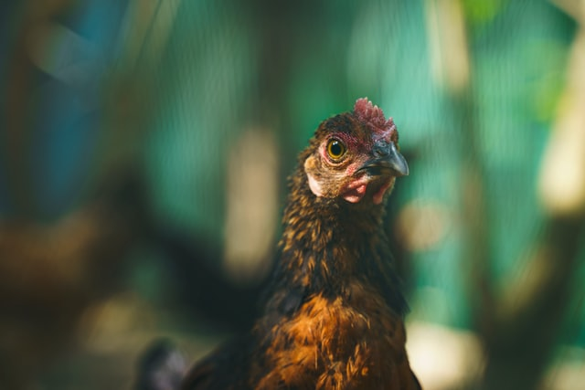
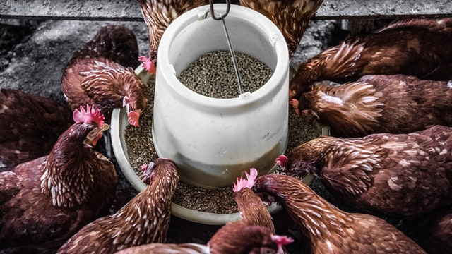

Poultry Farming, How To Get Started
What Is Poultry Farming?
Poultry farming is raising of domesticated birds such as chickens, turkeys, ducks, and geese, for the purpose of farming meat or eggs for food. Poultry farms are farms where birds (of different nature) are raised, either for personal consumption or for commercial purposes. Now I want to make two assumptions. First, you`re likely to be reading this tutorial with the intention to go into poultry farming as a busines Second, you`re likely to have interest much more in chicken than other birds, since Mr. and Miss chicken happen to be the most popular poultry birds. 
What Aspect of Poultry Farming Will You Love to Start?
- Broilers breeding This is for meat production. You'll grow your broilers and sell them out to the consumers. Broilers grow so fast. Within 42-45 days, most broiler are grown and ready to be sold For a potential poultry farmer in Nigeria (or elsewhere), this may be a way for you to get started as you could have quick returns on your investment
- Layers breeding Here you are breeding your layer chickens with the major aim of having them laying eggs, though you`ll eventually sell them off after they are becoming weak and are no longer laying much eggs as expected (this is usually after 54-70 weeks, about 2 year and 4 months)
- Poultry feed production People in this branch of poultry farming business are producing poultry`s food and selling them to the poultry farmers
- The Hatcheries Here you have people who hatch chicken and other birds. This aspect of poultry farming business is very important (though not common) because the health of a bird is determined by the effectiveness of the hatchery process.
- Poultry equipment manufacturing. You guess it. These guys manufacture various equipment needed on the poultry farm.
- Poultry consultant You will need experience in aforementioned niches before you can succeed as a consultant.
Yes, a giant company may be doing all of the above together, but if you`re just starting out, you definitely cannot, because of these two or three reasons;
- Taking all of the above together will require so much capital, but not just that.
- Starting all the above together will not work because poultry farming in Nigeria (or anywhere else), like any other business has a learning curve. For example, when you see a company doing all the above together, their story may look something like: Starting with layers birds for some months, going in to broilers production, expanding to poultry feed production, later hatchery and since they might have spent many years by now, they can now venture into poultry farming consultancy. I`m sure you got that. Start somewhere. Learn and grow.
- Crisis management. Did you hear someone said poultry farming business is very risky? That`s not true. Every business is risky, not just poultry. However, starting all the above together (even if you have enough capital) is not advisable because you are putting too many food in your mouth at a time.
The Cost of Starting a Poultry Farm in Nigeria
As noted before, here I will be talking about the first two branches of poultry farms (Broilers and layers` breeding, since they are the most popular and with much market demand).
Later on this website I will be talking about the cost of other branches.
In one hand, I would have loved to compare your intending poultry venture to giving birth to many children.
You will have to feed them, cloth them and house them, plus give them proper medications… all these methodically.
And to be candid, if you`re not willing to take care of your chickens as you`ll your children, maybe you should not start a chicken farm at all.
If you`re a beginner on this business (just planning to start your own poultry farming in Nigeria or elsewhere) you definitely have interest in this question.
However, as much as I will love to give you a straight answer here, there is no straight answer.
Do you know?
What a poultry farmer uses to acquire land alone may be what another person will use to start and run a profitable poultry business. Land, which is one of the major expenses you will incur is vary in price. This depends on location.
What you have to do is to make your findings.
The cost of other instruments, feeds, vaccines and medications you will need is vary too, depending on where you are living, so don`t let me make any futile guess that may confuse you.
This is what I want you to do. Make a list of everything you`ll need (from land to the littlest vaccine) for your poultry farming business and move out to investigate their prices in your vicinity.
I know you may not know what and what you will need to start get a poultry farm going (since I’ve assumed you don`t know anything about poultry farming business), so below I will make a list of what and what you will need.
Note; If you have the opportunity to visit any of our associates` poultry farm near you, you will see, touch or ask questions about any of these poultry equipment.
- Land/space. This depends on your intending scale of your poultry farm (I mean how big your intending farm). What if you have a large space at your backyard? It may be good to have your little pen (chicken house) there, in a small scale.
- A waste disposal system. Where will you be disposing the waste from your farm?
- A clean source of water for your birds. I mean clean (I have told you that you`ll have to take care of your birds like children. Lol)
- Lighting and heat will be needed. Electricity could be a little challenge for a farmer intending to start a poultry farming in Nigeria, however, there are always way out. You could use locally made lamps (especially when you`re just starting)
- Storage space for keeping your birds` foods, vaccines and eggs.
- Feeders. (Those things you see them putting chicken`s food on)
- Where they drink from (This is called drinkers)
- Nests
- Perches
- Egg trays or crates
- Vaccines and food which could be your major expenses farms.
The Cost of Feeding Your Chicken in Nigeria.
In your poultry business, at the long run, feeding your chickens will be the major area where most of your investment will go. Unlike Piggery , Snailry and Fishery where it`s easier to give some locally devised feeds to the pigs and fishes, to formulate chicken`s feeds is not as easy. So I think it will be nice if you can have the idea of how much your chicken will eat. Averagely a layer chick (little chicken) will consume 9-10 pounds for it first 10 weeks An average broiler chick may consume 8-9 pounds for it first 6 weeks The chickens` feed are sold in kilograms and about 2.2 pounds makes a kilogram (as your primary school Maths teacher taught you. Lol) 
Poultry Farming's Housing System
Just as we humans live in various kinds of houses, so are the animals and our chickens. And just as you will want to be careful about how and where you shelter your little children, believe me, chicks and chickens need special attention and care. Though some people live and sleep on the streets of Nigeria, that doesn`t mean that poultry farms could be located just anywhere in Nigeria Let me share with you a few options you have while considering the housing system you will go for.
- Free range system. This is commonly seen around you. Usually people buy chicks and allow them to roam about. Some people care a little to feed them while some do not. This may not be your option is you`re planning to go into the commercial poultry farming in Nigeria.
- Saw dust system. Yes, that`s not the name they call it in the academic world, but since my aim here is to communicate to people and let them understand me. I have to use simplest words possible. Here you will have your birds in a room where you will fill the floor with saw dust. This dust must be changed often or else the odour will be too bad. This could be a good place to start your poultry farming in Nigeria.
- Battery cage system. Here you house your birds inside cages. These cages are of different sizes and structures so as to cater for both the chicks (little chickens) and their older ones respectively. The space for feeding, eggs and dropping have been provided for in this structure. This housing system is the most preferred, but it could be a little expensive than the previous systems.
Possible Location of the Poultry Farm in Nigeria
There are few factors that make location a very important issue to be considered when thinking about poultry business and here they are;
- our market. Since what you want to sell is chicken and egg, a location near city is usually good. Why not city itself?
- Odour and noise. Who can live near a big poultry farm? In fact, it`s against the law in many places to have your bird`s farm near houses. Also consider:
- Cost of land. As I have said earlier, the cost of land in some cities could be enough for starting and running a poultry farming business in some nearby towns
Nigerians Poultry Farm Workers
The numbers of staff you’ll need, like other things, depends largely on the size of your intending chicken farm. You will need people to take care of feeding your birds, take care of droppings and wastes, pick eggs and of course market your products, be it eggs or chickens.
3 Major Risks You Need to Prepare Yourself for if You Want to Start Poultry Farming Business in Nigeria
- Disease Outbreak in the Chickens` Farm. This is the biggest one. Just as our little children are prone to disease, so do chicks and chickens. Just as we use different drugs for our children every day at different stages of their growth, so must we do with our chickens. Some precautionary measures are: make sure your farm environment is always very neat, don`t allow any dirty instrument to be kept around, don`t allow visitors in to your poultry farm and don`t just carry or touch your fowls anyhow except your hands have been sterilized very properly. Other issue to consider is…
- Poor Poultry Chickens` Feeds. There are various poultry feeds out there. Before you choose anyone for your birds, make sure you ask people who have been in this business around you before. Telling you a feed to go for here may not be proper since I don`t know where you are and the kinds of poultry feeds available in your area. If your chickens are feed with poor (low nutrients) feeds, it will affect their growth and productivity
- Poultry Employees and Outsiders` Theft. You need to be aware of this… many people are thieves. People steal, and even more in poultry farms (because fowls lay eggs all through the day). Not just eggs, when your farm becomes large, even outsiders find ways to penetrate into your poultry farm and steal. That is why it may not be advisable for you to start your poultry business and not be there yourself.
Selling Your Poultry Farm's Eggs and Chickens
This is where the real deal is. If we discuss every other things and omit this, nothing is discussed, after all you're in this game so as to make money.
Even before you start your poultry farm, make sure you investigate and know your market… where you`ll be selling your eggs and chickens. Make contact with some of the egg retailers. Find out the prices they are buying a crate of egg.
Do likewise with the chicken market. Understand the logistics and cost of transportation from your farm to the market you`ll be selling to and appropriately plan for every expenses.
I am sure you know, poultry farming business is not in any way different from other businesses out there. There are competition and there are strategies to win the market.
If you take your time to learn ins and outs of business world and apply the right strategies in your market place, you can make good money in the poultry farming business.